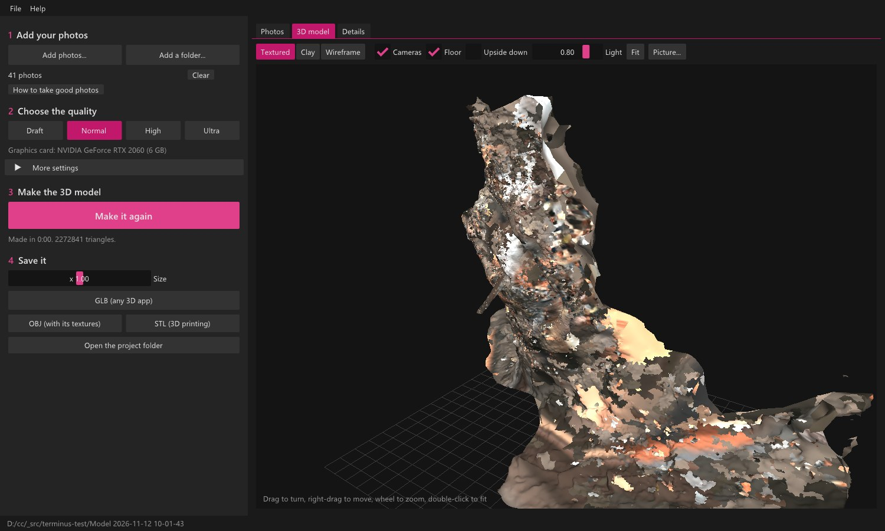

Good photos make good models
Take 30 to 200 photos walking all the way round, each sharing most of what's in the last one; go round again higher up and lower down. Keep them sharp, in good light, without zooming between photos. Shiny, see-through and plain white things are hard.
Minimum requirements
| System | Windows 10 or 11, 64-bit |
|---|---|
| Processor | a 64-bit processor with 4 cores or more |
| Memory | 8 GB RAM (16 GB for High and Ultra) |
| Graphics | any graphics card with OpenGL 3.3 (2010 or newer); an NVIDIA card (CUDA) for full-detail depth, without one it still builds the model |
| Disk | 500 MB for the app, plus 1 to 5 GB for each model it builds |